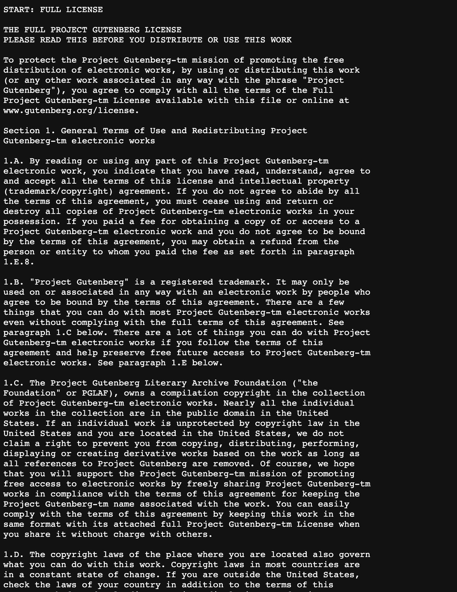
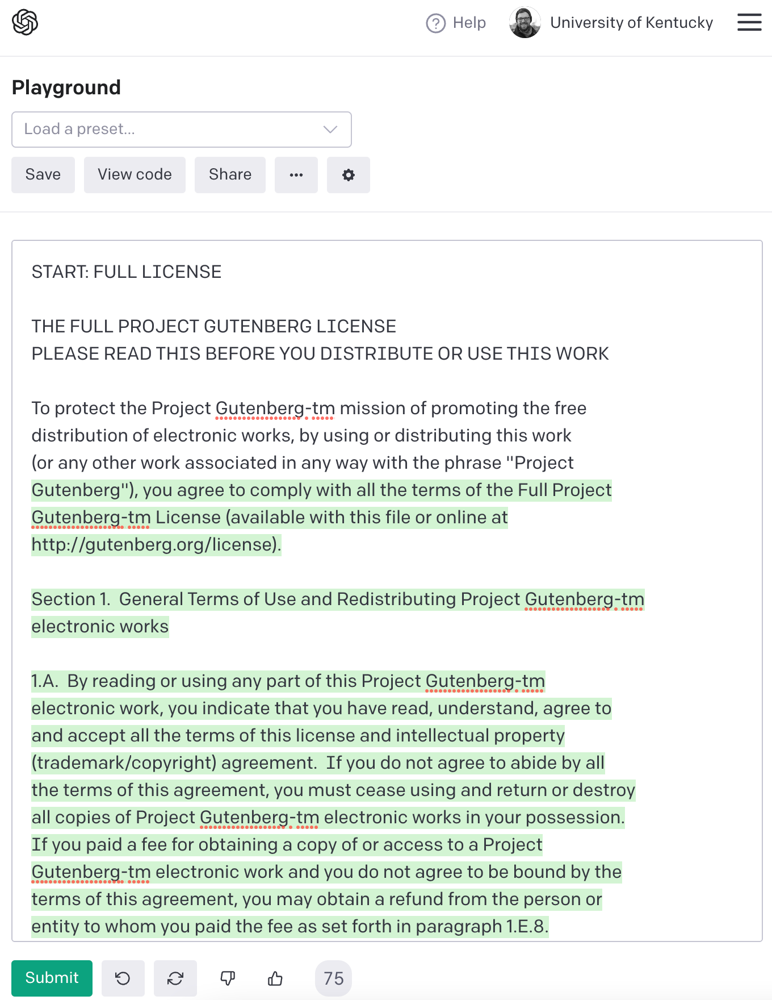
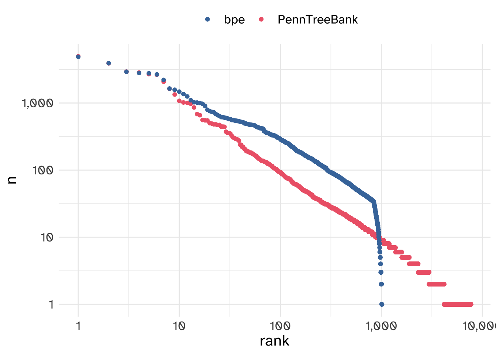

Data Processing
Most data analysis time is spent on data wrangling
Before we even get to substantive issues of “text normalization” and “tokenization”, we need to also deal with basic data wrangling. For example, let’s say I wanted to download 4 works from Mary Shelly from Project Gutenberg and calculate what the most common 4 word sequences in her work are, I might quickly write some code like this.
# python
# urllib.request will download the books
import urllib.request
# using a dictionary just to show the title of books here in the code.
shelley_dict = {"Tales and stories": "https://www.gutenberg.org/cache/epub/56665/pg56665.txt",
"Frankenstein" : "https://www.gutenberg.org/files/84/84-0.txt",
"The Last Man" : "https://www.gutenberg.org/cache/epub/18247/pg18247.txt",
"Mathilda" : "https://www.gutenberg.org/cache/epub/15238/pg15238.txt"}
# A collector list for all of the 4 word sequences
all_grams4 = []
# Loop over every url
for url in shelley_dict.values():
book_dat = urllib.request.urlopen(url)
# this deals with the
# 1. character encoding
# 2. trailing whitespace
# 3. simplistic tokenization on spaces
book_lines = [line.decode("utf-8-sig").strip().split(" ")
for line in book_dat]
# This flattens the list above into one long list of words
book_words = [word
for line in book_lines
for word in line
if len(word) > 0]
# Collector list of 4grams from just this book
grams4 = []
# loop over every index postion up to 4 words short of the end.
for i in range(len(book_words)-4):
# glue together 4 word sequences with "_"
grams4.append("_".join(book_words[i:(i+4)]))
# Add this book's 4grams to all of the books' 4grams
all_grams4 += grams4The list all_grams4 contains a list of every token of 4grams in these books. Let’s count them up and look at the top 10 most frequent 4 word phrases Mary Shelley used in her writing!
| 4gram | count |
|---|---|
Project_Gutenberg_Literary_Archive |
52 |
the_Project_Gutenberg_Literary |
44 |
Gutenberg_Literary_Archive_Foundation |
33 |
the_terms_of_this |
32 |
Project_Gutenberg-tm_electronic_works |
31 |
at_the_same_time |
25 |
in_the_United_States |
24 |
to_the_Project_Gutenberg |
24 |
*_*_*_* |
22 |
for_the_sake_of |
21 |
So, either Mary Shelly was obsessed with the Project Gutenberg Literary Archive, and the terms of this and for the sake of, or something else is going on.
As it turns out, every plain text Project Gutenberg book has header information with a short version of the users’ rights and other metadata information, and then at the end has the entirety of the Project Gutenberg License, which is written in legal language.
In any corpus building project, decisions need to be made about how header, footer, and general boilerplate data like this will be treated. There are handy packages for python and R that make stripping out the legal language easy
- python:
gutenbergpy - R:
gutenbergr
Or, you might decide to leave it all in. It seems pretty clear this is the approach to the dataset they trained GPT-3 on, because if you prompt it with the first few lines of the Project Gutenberg license, it will continue it.


Markup is everywhere
Setting aside the issue of headers and footers, we also need to deal with the fact that “markup” is everywhere. Even in the relatively plain text of Project Gutenberg books, they use underscores _ to indicate italics or emphasized text.
# python
underscore_lines = [line
for line in book_lines
if any(["_" in word
for word in line])]
for i in range(4):
print(" ".join(underscore_lines[i]))Mathilda _is being published
of_ Studies in Philology.
novelette _Mathilda_ together with the opening pages of its rough
draft, _The Fields of Fancy_. They are transcribed from the microfilmThis, again, is something we need to decide whether or not we want to include in our corpora. For these massive language models that focus on text generation, they may want the model to generate markup along with the text, so they might leave it in. Some text markup that’s intended to indicate prosodic patterns could be useful to leave in from a linguistic theory perspective.
Either way, though, it is still a decision that needs to be made about the data.
Text Normalization
I called the issues above “data wrangling”, since it’s mostly about identifying the content we want to be including in our modelling. But once you’ve done that, there are still questions about how we process data for analysis which fall under “text normalization”.
Consider the following sentences
The 2019 film Cats is a movie about cats. Cats appear in every scene. A cat can always be seen.
Let’s split this sentence up along whitespace1, and count how many times “cats” appears.
import re
phrase = """The 2019 film Cats is a movie about cats.
Cats appear in every scene.
A cat can always be seen"""
words = re.split("\s", phrase)
cat_c = Counter(words)| word | count |
|---|---|
| Cats | 2 |
| cats. | 1 |
| cat | 1 |
A very important thing to keep in mind is that our language models will treat the words in these rows as three completely separate word types.2 That even includes the period . in the second row. Some typical steps involve
separating punctuation from words
“case folding” or converting everything to lowercase.
words2 = re.split(r"\s", phrase)
words2 = [re.sub(r"\W", '', word) for word in words2]
words2 = [word.lower() for word in words2]
words2['the', '2019', 'film', 'cats', 'is', 'a', 'movie', 'about', 'cats', '', 'cats', 'appear', 'in', 'every', 'scene', '', 'a', 'cat', 'can', 'always', 'be', 'seen']| word | count |
|---|---|
| cats | 3 |
| cat | 1 |
We’ve now got a slightly better set of counts. With the punctuation stripped and everything pushed to lowercase, there’s now just two word forms: cats and cat.
One downside, though, is we’ve also collapsed together the title Cats, which refers to either a Broadway musical or a 2019 film, and the word “cats” which refers to furry felines. Merging these two together could be sub-optimal for later tasks, like, say, sentiment analysis of movie reviews.
‘Cats’ is both a horror and an endurance test, a dispatch from some neon-drenched netherworld where the ghastly is inextricable from the tedious. – LA Times

Tokenization (or, text is complex)
Setting aside semantic issues, there are a lot of things that happen inside of text, especially if it is transcribed speech, that makes normalizing text and tokenizing it way more challenging than just splitting up on white space and stripping out punctuation, even just for English.
Places to leave in punctuation
Some examples given by Jurafsky & Martin for where you might want to leave in punctuation are:
You don’t want to eliminate punctuation from inside
Ph.D, orm.p.h.. You also don’t want to eliminate it from some proper names, like ampersands inProcter & Gamble,Texas A&M,A&W,m&m's.You’ll want to keep formatting in numerals, and not split them into separate words. These are all possible numeric formats cross culturally for the same quantity
1,000.551.000,551 000,55
Currency symbols should probably be kept together with their numerals, and depending on the culture & denomination.
$0.9999¢€0,99
Dates: There are so many different permutations on how dates can be formatted that I shouldn’t list them all here, but here are some.3
yyyy-mm-dd
2022-09-12, yyyy/mm/dd2022/09/12yyyy-m-dd
2022-9-12, yyyy/m/dd2022/9/12dd-mm-yyyy
12-09-2022, dd/mm/yyyy12/09/2022dd-m-yyyy
12-9-2022, dd/m/yyyy12/9/2022dd-mm-yy
12-09-22, dd/mm/yy12/09/2022mm-dd-yyyy
09-12-2022, mm/dd/yyyy09/12/2022m-dd-yyyy
9-12-2022, m/dd/yyyy9/12/2022mm-dd-yy
09-12-22, mm/dd/yy09/12/22m-dd-yy
9-12-22, m/dd/yy9/12/22
Emoticons,4 where the token is entirely punctuation
:),>.<.
Places to split up words
Sometimes the tokens you get back from whitespace tokenization ought to be split up even further. One example might be hyphenated words, like hard-won.
hard-won➔hard,wonorhard,-,won.
Another example involves clitics, like n't or 're in English.
isn't➔is,n'tcan't➔ca,n'twhat're➔what,'re
Places to glue words together
You might want to also glue together tokens from whitespace tokenization.
New,York,City➔New York CitySuper,Smash,Brothers➔Super Smash Brothers.
Challenges with speech and text
: $1500
: “one thousand five hundred dollars”
: “fifteen hundred dollars”
: “one and a half thousand dollars”
: “one point five thousand dollars”
Tokenizers
There seem to be broadly two kinds of tokenizers people use, depending on their goals.
- Tokenizers that try to hew to linguistic structure, and can generate relatively large vocabulary sizes (number of tokens).
- Tokenizers that try to keep the vocabulary size relatively small, to make neural network training possible.
Word/language piece based tokenizers
There are a number of tokenizers available through the nltk (Natural Language Took Kit) (Bird, Klein, and Loper 2009) python package. They all have slightly different settings and outcomes. Here I’ll compare the PennTreeBank tokenizer, a simpler punctuation-based tokenizer, and a “casual” tokenizer.
PennTreeBank
The PennTreeBank tokenizer is built up out of regular expressions (more on that soon). It
separates out punctuation and non-alphanumeric characters as their own tokens
Separates off contractions as their own tokens, using a fixed list
from nltk.tokenize import sent_tokenize, TreebankWordTokenizer
phrase2 = """CATS had a budget of $100,000,000, most of which went into the so-called 'digital fur technology'.
It's a little hard to believe, but it only made $75.5 million at the box office.
#badmovie :-P
"""
sentences = sent_tokenize(phrase2)
tokens = [TreebankWordTokenizer().tokenize(s) for s in sentences]CATS |
had |
a |
budget |
of |
$ |
100,000,000 |
, |
most |
of |
which |
went |
into |
the |
so-called |
'digital |
fur |
technology |
' |
. |
It |
's |
a |
little |
hard |
to |
believe |
, |
but |
it |
only |
made |
$ |
75.5 |
million |
at |
the |
box |
office |
. |
# |
badmovie |
: |
-P |
Simple whitespace + punctuation tokenizer
Splits strings based on whitespace & non-alphanum
from nltk.tokenize import wordpunct_tokenize
tokens = [wordpunct_tokenize(s) for s in sentences]CATS |
had |
a |
budget |
of |
$ |
100 |
, |
000 |
, |
000 |
, |
most |
of |
which |
went |
into |
the |
so |
- |
called |
' |
digital |
fur |
technology |
'. |
It |
' |
s |
a |
little |
hard |
to |
believe |
, |
but |
it |
only |
made |
$ |
75 |
. |
5 |
million |
at |
the |
box |
office |
. |
# |
badmovie |
:- |
P |
Tweet Tokenizer
Intended to be more apt for tokenizing tweets.
from nltk.tokenize import TweetTokenizer
tokens = [TweetTokenizer().tokenize(s) for s in sentences]CATS |
had |
a |
budget |
of |
$ |
100,000 |
, |
000 |
, |
most |
of |
which |
went |
into |
the |
so-called |
' |
digital |
fur |
technology |
' |
. |
It's |
a |
little |
hard |
to |
believe |
, |
but |
it |
only |
made |
$ |
75.5 |
million |
at |
the |
box |
office |
. |
#badmovie |
:-P |
Fixed Vocab Tokenizing
The downside of tokenizers like the three above is that you can’t pre-specify how many types you will get out. That is, you can’t pre-specify your vocabulary size. That isn’t ideal for neural-network based models, which need to use matrices of finite and pre-specified size. So there are also tokenizers that keep a fixed cap on the vocabulary size, even if they result in tokens that aren’t really linguistically meaningful.
Byte Pair Encoding
Byte Pair Encoding is one approach to tokenizing where we can pre-specify the maximum vocabulary size either by setting a maximum vocabulary hyperparameter, or by setting a maximum iteration hyperparameter.
Let’s start out with a fake training of a byte pair encoder with the simple vocabulary “cats can’t canter”. We kick things off treating every character as a token, plus a specialized start-of-word symbol, which I’m representing with _.
Tokens
_ c a t s
_ c a n ' t
_ c a n t e rTypes
{'a', 'e', 't', 'r',
's', 'n', 'c', "'", '_'}This is, in principle, the smallest and simplest tokenization we could do for any input text. While the total number of words is infinite, the total number of characters or symbols we use to create those words is finite.
The next step is to count up all of the pairs (or bigrams) of tokens in the training data. In this case, both (_, c) and (c, a) appear equally commonly, so I make a decision and say (_, c) is the one we’ll process first. We’ll paste them together, call them a new type, and replace all (_, c) sequences with _c.
tokens
_c a t s
_c a n ' t
_c a n t e rtypes
{'a', 'e', 't', 'r',
's', 'n', 'c', "'", ' ',
`_c`}Repeating the process, the most frequently occurring bigram is now (_c, a), so we’ll add _ca as a new type, and replace all (_c, a) sequences with _ca.
tokens
_ca t s
_ca n ' t _
_ca n t e r _types
{'a', 'e', 't', 'r',
's', 'n', 'c', "'", ' ',
'_c', '_ca'}Finally, the last most frequent sequence is (_ca, n), so we’ll add _can to the vocabulary, and collapse (_ca, n) sequences.
tokens
_ca t s
_can ' t
_can t e rtypes
{'a', 'e', 't', 'r',
's', 'n', 'c', "'", ' ',
'_c', '_ca', '_can'}We’ll stop at that point, but we could either continue for a fixed number of iterations, or until our type, or vocabulary size reaches a fixed number.
Training
The python library sentencepiece has a method for training a BPE tokenizer. We’ll run it on Frankenstein with a vocabulary limited to about ~1,000 items to see what we’ll get.
import gutenbergpy.textget
from gutenbergpy.gutenbergcache import GutenbergCacheSettings
import sentencepiece as spm
GutenbergCacheSettings.set(TextFilesCacheFolder = "gen/texts/")
raw_book = gutenbergpy.textget.get_text_by_id(84)
clean_book = gutenbergpy.textget.strip_headers(raw_book)
with open("gen/texts/frank.txt", 'wb') as file:
x = file.write(clean_book)
file.close()spm.SentencePieceTrainer.train(input = "gen/texts/frank.txt",
model_prefix = "gen/m",
vocab_size = 1000,
model_type = "bpe")The code above trained the tokenizer and saved it as a model. Here we’ll load it and run it on a sample paragraph to look at the output.
sp = spm.SentencePieceProcessor(model_file='gen/m.model')para = """
You will rejoice to hear that no disaster has accompanied the
commencement of an enterprise which you have regarded with such evil
forebodings. I arrived here yesterday, and my first task is to assure
my dear sister of my welfare and increasing confidence in the success
of my undertaking
"""
print(sp.encode_as_pieces(para))['▁You', '▁will', '▁re', 'j', 'o', 'ice', '▁to', '▁he', 'ar', '▁that', '▁no', '▁dis', 'as', 'ter', '▁has', '▁acc', 'om', 'p', 'an', 'ied', '▁the', '▁comm', 'ence', 'ment', '▁of', '▁an', '▁enter', 'pr', 'ise', '▁which', '▁you', '▁have', '▁reg', 'ard', 'ed', '▁with', '▁such', '▁ev', 'il', '▁f', 'ore', 'b', 'od', 'ings', '.', '▁I', '▁arri', 'ved', '▁he', 're', '▁y', 'es', 'ter', 'd', 'ay', ',', '▁and', '▁my', '▁first', '▁t', 'as', 'k', '▁is', '▁to', '▁ass', 'ure', '▁my', '▁dear', '▁s', 'is', 'ter', '▁of', '▁my', '▁we', 'lf', 'are', '▁and', '▁inc', 're', 'as', 'ing', '▁conf', 'id', 'ence', '▁in', '▁the', '▁su', 'cc', 'ess', '▁of', '▁my', '▁under', 't', 'aking']The Benefit?
Why tokenize things this way? On the one hand, we wind up with tokens that don’t align with any particular linguistic structure. On the other, we’ve got a predictable vocabulary size, and a dramatically less serious data sparsity problem.

| method | once | total | proportion once |
|---|---|---|---|
| bpe | 9 | 1015 | 0.009 |
| ptb | 3533 | 7710 | 0.458 |
References
Footnotes
The regex shortcut
\sstands for all white space, including spaces, tabs, newlines and character returns.↩︎At least, before we start doing fancier models that start taking into account distributional semantics.↩︎
I’m being tedious here on purpose, because you have to keep in mind that if you wrote a function to handle just one of these possible date formats, it would not immediately translate over to the others!↩︎
This example isn’t from Jurafsky & Martin.↩︎